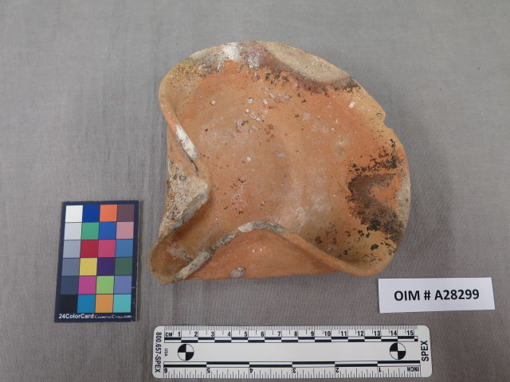
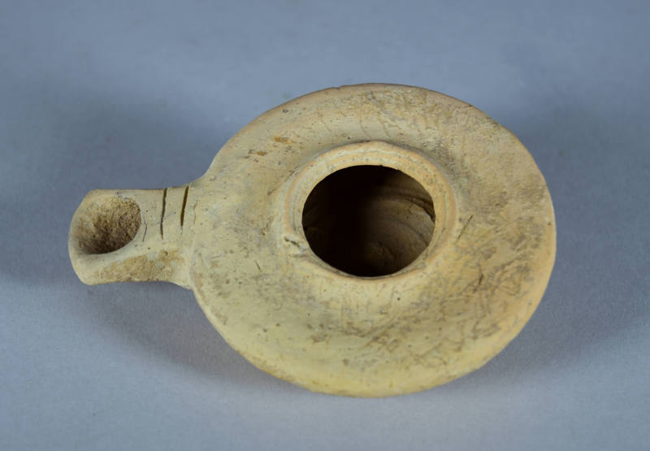
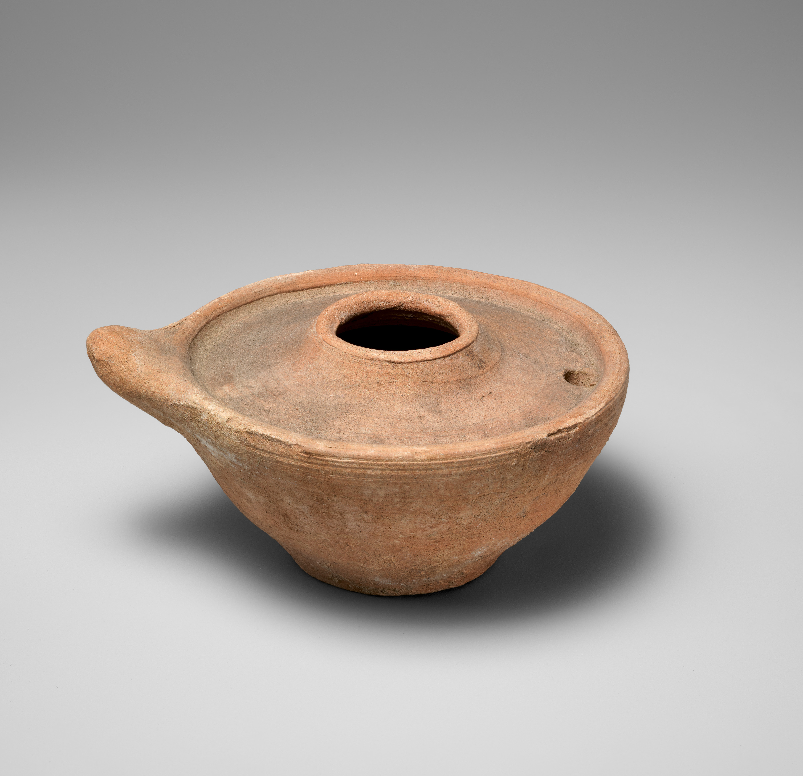
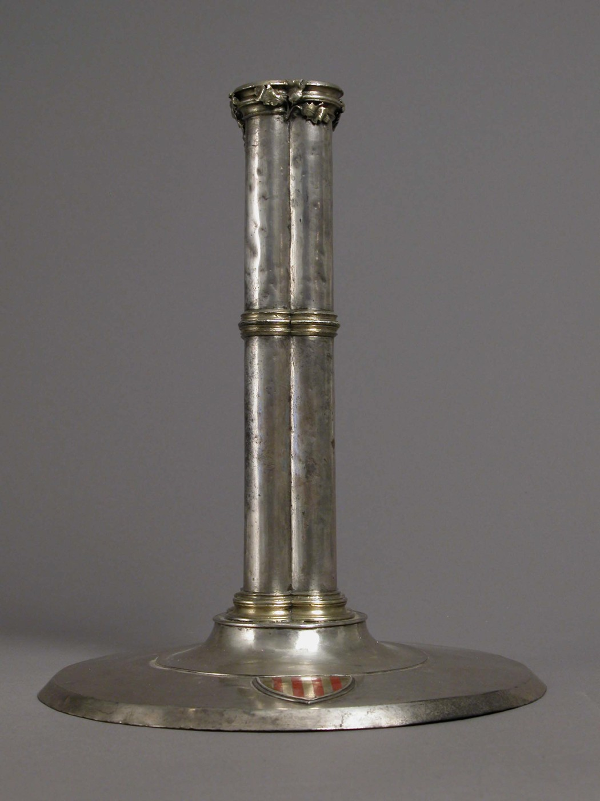
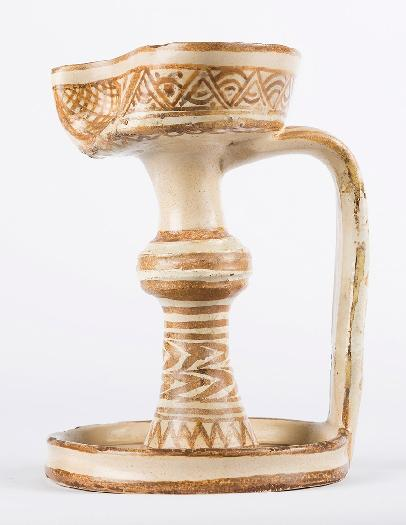
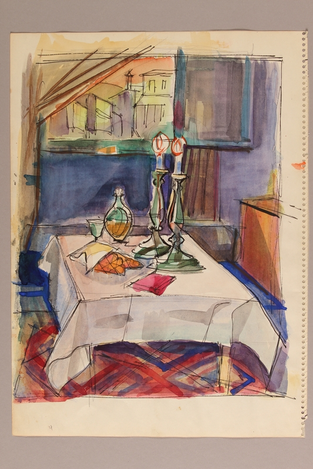
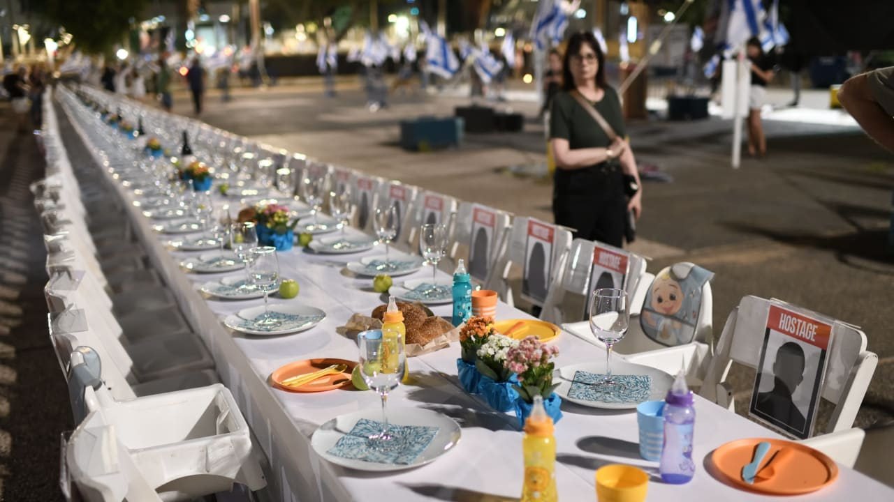
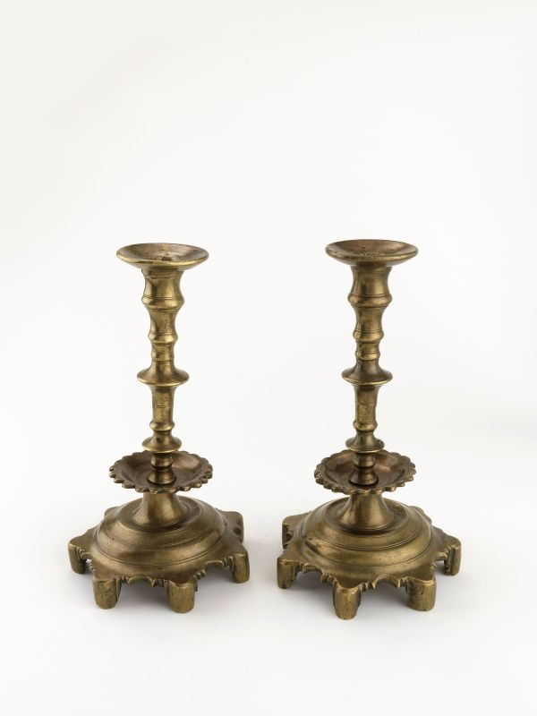

הכיוון החדש, לפי מה שכתבת, עם שיפורים קלים. הקריינות עוד לא נכתבה (יש רק כיוון בסצנות 9 ו-10), והוויזואל עוד לא סופי.
לחיצה על עריכה מאפשרת לשנות כל תא בטבלה. שמירה שומרת בדפדפן הזה. ייצוא קובץ מוריד את הטיוטה, יחד עם כל היסטוריית השינויים, לתיקיית ההורדות. כל שמירה נרשמת כגרסה, והתאים ששונו מסומנים בפס ירוק.
מוכן
#
שנה
סצנה
מה רואים
קריינות (עברית)
קריינות (English)
הערות
1
בראשית
בריאת העולם
ששת ימי הבריאה. ביום השביעי העולם נעצר ונח. אין אש ואין נר.
חושך, תוהו ובוהו, על פני תהום. ויאמר אלוהים: יהי אור. מים ממים, יבשה מתוך הים, הרים עולים מיסודותיהם. המאור הגדול והמאור הקטן, כוכבים לאין ספור. חיים שורצים במים, כנפיים ברקיע, כל חיה למינה. שישה מאמרות, יש מאין. וביום השביעי, כל הבריאה נדמת. בין ערביים, מתוך החושך, נולדת להבה אחת קטנה. לא עוד מעשה בריאה, אלא מעשה המנוחה הראשון. זו השבת.קיים ומוקלט: vo-G (51 שנ'). תומלל מההקלטה.
Darkness, without form and void, upon the face of the deep. And God said: Let there be light. Waters from waters, dry land out of the sea, mountains rising from their foundations. A great light and a lesser light, stars beyond number. Life swarming in the water, wings across the sky, every beast after its kind. Six utterances, something out of nothing. And on the seventh, all creation falls still. At twilight, out of the dark, one small flame is born. Not another act of creation, but the first act of rest. This is Shabbat.
2,448
2
בערך 1300 לפנה"ס
המדבר
מחנה במדבר ביום שישי. מלקטים מן כפול, ומנה אחת נשמרת לשבת. מדורה שכבר דולקת, והשבת נכנסת עם השקיעה. בלי טקס הדלקה.
ארבעים שנה במדבר. בכל בוקר, המן ירד מהשמיים. ביום השישי, מנה כפולה, כדי שביום השביעי יוכלו לנוח, כפי שציווה ה'. בפעם הראשונה, עם שלם נח.
Forty years in the wilderness. Every morning, bread fell from heaven. On the sixth day, a double portion, so that on the seventh they could rest, as God commanded. For the first time, a nation rested.
1,370
3
70 לספירה
ירושלים
1 · ✅ ירושלים מלמעלה בשקיעה, עשן עולה מהבתים. (city-aerial) 2 · ✅ שופר בסמטה מכריז על כניסת השבת, יונים ממריאות. (alley-shofar) 3 · ✅ האב קונה תבלינים בשוק לפני שבת, וממהר הביתה. (market-pepper) 4 · ✅ נכנס הביתה, בדיוק כשהאם והילדה מדליקות נר חרס ומכסות את העיניים. הברכה כבר בשוט. (home-candle-v3) 5 · ➕ מוצאי שבת: המשפחה ליד השולחן. רעש חזק מבחוץ, האב קם. 6 · ➕ האב יוצא לסמטה הגבוהה מחוץ לבית. בקצה שלה אור כתום ועשן. 7 · ✅ מול העיניים שלו: העיר נשרפת והמקדש נחרב. (סוף destruction-v1) 8 · ➕ קאט: שיירה אחת ארוכה של כל היהודים יוצאת מירושלים בשחר.
5 שוטים קיימים, 3 חדשים. אורך כ-52 שנ' (אביחי מטפל באורך). יוצאים מהסרט: הקליפים עם הנר בזמן החורבן.
[1–3] מן המדבר, הם הגיעו הביתה. עיר של אבן, ובליבה מקדש. ובכל יום שישי, כשהשופר נשמע, השבת נכנסה לכל בית. [4](שקט: הברכה של האם) [5] עד הלילה שבו השבת ההיא יצאה. [7](שקט) [8] ירושלים בערה. עד הבוקר, הם עזבו את הבית היחיד שהכירו אי פעם.
[1–3] From the wilderness, they came home. A city of stone, a Temple at its heart. And every Friday, as the shofar sounded, Shabbat entered every home. [4](silence: the mother's blessing) [5] Until the night that Shabbat ended. [7](silence) [8] Jerusalem was burning. By morning, they were leaving the only home they had ever known.
430
4
בערך 500 לספירה
בבל
אחרי שעזבו את ירושלים, הם מוצאים בית חדש. מתקבלים בטוב, עובדים ומתבססים, ויש להם נחת. הפוקוס על הלמידה: חכמים, ישיבה, והתלמוד הבבלי מתפתח. לומדים גם בשבת.
אחרי החורבן, הרחק מירושלים, חיים חדשים התחילו בבבל. יהודים עבדו את האדמה, סחרו, שגשגו ושמרו את השבת בשלווה. במשך דורות, כאן נולד התלמוד.
After the destruction, far from Jerusalem, a new life began in Babylon. Jews worked the land, traded, prospered, and kept their Sabbaths in peace. Over generations, here, the Talmud was born.
650
5
בערך 1147 · קורדובה
ספרד: תור הזהב
1 · ➕ שישי אחר הצהריים בחצר בקורדובה: נגן פורט על עוד, המשפחה מסיימת הכנות לשבת. 2 · ➕ הגברים שרים פיוט לקבלת השבת. בסוף השוט הנגן מניח את העוד. 3 · ✅ קאט: כבר חשוך יותר, עברו שעות. הסבתא מדליקה את פמוטי הכסף. 4 · ✅ הילדים מביאים את האוכל לשולחן השופע. (scene8-wide-table) 5 · ✅ האב מקדש על היין. (scene8-kiddush)2 שוטים חדשים, 3 קיימים. הנגינה רק לפני כניסת השבת: את המעבר מראים דרך החושך שבקאט. בלי סיר החמין.
[1] בספרד, השבת מצאה את קולה. [3] (אופציונלי) ועכשיו, שני נרות. אחד לזכור את השבת, ואחד לשמור אותה. [4](שקט: הסעודה) [5, סוף] אבל זה לא החזיק מעמד.
[1] In Spain, Shabbat found its voice. [3] (optional) And now, two lights. One to remember the Sabbath, one to keep it. [4](silence: the meal) [5, end] But it did not last.
פמוטים: זוג פמוטי הכסף מופיע רק בספרד, והגירוש לוקח אותו: החפץ אבד, המנהג לא. כאן מופיעים לראשונה שני אורות, אחד כנגד "זכור" (שמות כ) ואחד כנגד "שמור" (דברים ה). המנהג נפסק בשולחן ערוך, או"ח רס"ג. פיוט לבחירה: (מומלץ) "דְּרוֹר יִקְרָא", דונש בן לברט, קורדובה, המאה ה-10, ושרים אותו עד היום · (א) "יום שבתון אין לשכוח", רבי יהודה הלוי · (ב) "כי אשמרה שבת", אבן עזרא · (ג) "בואי כלה", הקריאה מהתלמוד (שבת קיט, א). לא "לכה דודי", כי הוא מצפת 1540. הוחלט: הסצנה נגמרת ב-"But it did not last". את הגירוש של 1492 מספרת המפה בתחילת ליסבון.
393
6
בערך 1540
ליסבון
1 · ➕ מפה מונפשת: קווי אור יוצאים מספרד, לפורטוגל, לסלוניקי, למרוקו ולאיטליה. הקו לפורטוגל מודגש. 2 · ➕ הזום נכנס אל ליסבון, אל הרחובות. 3 · ➕ בוקר יום שישי, בכנסייה: אישה בין המתפללים מצטלבת עם כולם. צלב על הצוואר. 4 · ➕ עוקבים אחריה ברחוב עד הבית. שכנה מסתכלת מהחלון. 5 · ➕ בבית, הדלת נסגרת. היא מורידה את שרשרת הצלב ומניחה אותה על השולחן. 6 · ➕ במרתף: שני נרות פשוטים על השולחן. היא מדליקה ומגוננת על הלהבות בכף היד. ברכה בלחש. היא מקדשת על היין. 7 · ➕ צעדים ברחוב מעל. הלהבות רועדות, ונשארות.
כל השוטים חדשים. הכנסייה בבוקר יום שישי והמרתף בערב, כלומר יממה אחת. המפה היא מעבר ויזואלי.
[1–2, מפה] ב-1492, היהודים גורשו מספרד. רבים ברחו לפורטוגל. שם, הוכרחו להתנצר. [3–4] והאינקוויזיציה רדפה כל מי שעוד חי כיהודי. [5](שקט: הצלב יורד) [6] להיתפס פירושו היה מוות. ועדיין, מאחורי דלתות סגורות, הם הדליקו את נרות השבת.
[1–2, map] In 1492, the Jews were expelled from Spain. Many fled to Portugal. There, they were forced to become Christians. [3–4] And the Inquisition hunted anyone who still lived as a Jew. [5](silence: the cross comes off) [6] Discovery meant death. And still, behind closed doors, they lit the Shabbat lights.
אור: שני נרות פשוטים, בלי פמוטי כסף, כי חפץ יהודי היה ראיה לאינקוויזיציה. שני אורות כדי שהצופה יזהה את הרצף. עקבי עם סרט דונה גרציה (נרות במרתף, האם מגוננת בכף היד). היודנשטרן אשכנזי ושייך לחבל הריין, לא לליסבון. רוב הגולים, כ-100 אלף, ברחו לפורטוגל. ב-1497 המלך מנואל המיר אותם בכוח, והאינקוויזיציה הוקמה ב-1536. אם "Discovery meant death" חזק מדי, החלופה: "It could cost them their lives".
400
7
1941–1945
השואה
1 · ➕ שוט רחב של הגטו בחורף. אנשים רזים בבגדים בלויים ודקים, עם סימן היהודי על הזרוע. 2 · ➕ האמא מחכה בתור ללחם. היא מקבלת חתיכה קטנה. 3 · ➕ היא עוטפת את החתיכה בבד ומוסיפה אותה לפרוסות שכבר אספה במהלך השבוע. 4 · ➕ ערב שבת בחדר: המנורה כבר על השולחן, והיא מדליקה את הנר. 5 · ➕ כל המשפחה יושבת סביב הנר. היא פותחת את הבד ומחלקת את הלחם ששמרה כל השבוע, כדי שבשבת יהיה מספיק לאכול.
כל השוטים חדשים. יום שישי אחד בגטו, מהבוקר עד הערב. בלי אלימות על המסך: הרעב והקור מספרים הכול.
[1] ארבע מאות שנה אחר כך, כבר לא נשארו דלתות לסגור. [2] הכול נלקח מהם. [3] כאן לא ירד לחם מן השמיים. אז כל השבוע, היא חסכה משלה. [4] ובכל זאת, בליל שישי, היו מי שמצאו דרך להדליק. [5](שקט: הלחם מתחלק)
[1] Four hundred years later, there were no doors left to close. [2] Everything was taken from them. [3] No bread fell from the sky here. So all week, she saved her own. [4] And still, on Friday night, some found a way to light. [5](silence: the bread is shared)
הפרוסה השמורה היא קולבק למנה הכפולה בסיני: שם ה' נתן כדי שיוכלו לשבות, וכאן אמא חוסכת כדי שתהיה שבת. מנת המזון הרשמית בגטו ורשה ב-1941 הייתה פחות מ-200 קלוריות ביום. השורה על הלחם היא הד לסיני, ב-"sky" ולא ב-"heaven". הפמוטים: זוג הכסף מספרד ומליסבון כבר לא כאן, וזה נר מאולתר. "And still" חוזר מליסבון. בגטו לבשו בגדים אזרחיים בלויים עם סרט זרוע. מדי אסירים מפוספסים היו רק במחנות. רעיונות לגשר ויזואלי מליסבון (לא הוחלט): (1) הצלב יורד מהצוואר, וסימן היהודי עולה על הזרוע (match cut). בגטו ורשה זה היה סרט זרוע לבן עם מגן דוד כחול, והטלאי הצהוב היה בלודז' ובגרמניה. (2) הלהבות במרתף הופכות ללהבות בגטו.
3
8
1948
ישראל
1 · ארכיון צילומי הארכיון של ההכרזה: בן גוריון קורא, הקהל באולם עומד. "...היא מדינת ישראל". 2 · ➕ הקול ממשיך, עכשיו מסונן ברדיו. סלון צנוע, והמשפחה מצטופפת סביב מקלט הרדיו. 3 · ➕ התגובה: רגע של שקט, ואז האמא מחבקת את הילדים. 4 · ➕ קאט, כמה שעות אחר כך, בשקיעה. שולחן ליד חלון פתוח, כולם בבגדי שבת לבנים. האמא מדליקה פמוטי פליז. 5 · ➕ כולם סביב השולחן. האבא עושה קידוש, וכולם שרים "שלום עליכם". האמא בוצעת את החלה ונותנת לכל אחד חתיכה גדולה.
יום שישי, 14 במאי 1948: ההכרזה בארבע אחר הצהריים, ונרות בשקיעה. המעבר מהארכיון לסלון נעשה בסאונד ולא ביציאה ממסך.
[1–2](בלי קריין: הקול המקורי של בן גוריון) [3] פתוח: דיאלוג, שקט או קריינות. טרם הוחלט. [4–5](קידוש ושירה)
[1–2](no narrator: Ben-Gurion's original voice) [3] Open: dialogue, silence or narration. TBD. [4–5](kiddush and singing)
ההכרזה הוקדמה לשישי בארבע אחר הצהריים, כי המנדט הסתיים בחצות, כשכבר הייתה שבת. ב-1948 לא הייתה טלוויזיה, והשידורים התחילו רק ב-1968, אז שמעו את ההכרזה ברדיו בשידור חי. מי שקרא את ההכרזה היה בן גוריון. הלבוש: חולצה לבנה, חאקי וסנדלים, ולא ג'ינס. החלה הגדולה היא הד לפירורים בגטו. רעיונות לדיאלוג בשוט 3: (א) ילד: "אמא, למה את בוכה?" ואמא: "כי מהיום, יש לנו בית." (ב) סבתא: "הלוואי שאבא שלי היה שומע את זה." (ג) אבא: "יאללה, עוד שלוש שעות שבת. תערכו שולחן." לבדוק זכויות על צילומי הארכיון מול ארכיון המדינה ולשכת העיתונות הממשלתית. את השירה עושים ב-Seed Audio. דיאלוג בעברית יקבל כתוביות באנגלית. אופציה: תמונה של חייל שנפל, על המדף בסלון.
75
9
7.10.2023
7 באוקטובר
1 · ➕ מעבר שוט אווירי של העוטף, שבת בבוקר: שקט ושדות. ואז עמודי עשן עולים באופק. בלי אלימות. 2 · ➕ שחור. 3 · ➕ ליל שישי בתל אביב: שולחן שבת ארוך ברחבה. על הכיסאות הריקים תמונות. 4 · ➕ אנשים מתאספים, דתיים וחילונים יחד. נרות נדלקים לאורך כל השולחן. 5 · ➕ אישה מדליקה נרות מול כיסא ריק. קידוש, וכולם עונים "אמן".
SUPER: "יותר משישראל שמרו את השבת, שמרה השבת אותם." (אחד העם)
השוט האווירי הוא מעבר, כמו המפה בליסבון. הסצנה עצמה מתרחשת ביום שישי, 20.10.2023, בשולחן הארוך.
[1] עד בוקר שבת אחד. [2–4](שקט) [5] ביום שישי הראשון אחרי, השולחן נערך לכולם. גם למי שלא היה שם.
[1] Until one Shabbat morning. [2–4](silence) [5] The first Friday after, the table was set for everyone. Even for those who were not there. SUPER: "More than the Jews have kept Shabbat, Shabbat has kept the Jews." (Ahad Ha'am)
7.10.2023 היה שבת ושמחת תורה. "Until one Shabbat morning" הוא הד ל-"Until the night that Shabbat ended" בירושלים. השולחן הארוך עם הכיסאות הריקים נערך ב-20.10.2023 ברחבת מוזיאון תל אביב, לימים כיכר החטופים. רפרנס: research/scene-24/hostages-table-20oct2023-night.jpg. הציטוט "יותר משישראל שמרו את השבת, שמרה השבת אותם" הוא של אחד העם, 1898. שוט המעבר עם הפמוטים מ-1948 נפסל, והפער של 75 שנה לא מוסבר בקריינות.
3
10
היום
עולמי
1 · ➕ ממשיכים מכיכר החטופים: הנרות נדלקים מול הכיסא הריק. 2–7 · ➕ מונטאז' מהיר, כ-2.5 שניות לכל מקום, ברגע ההדלקה ולפי סדר השקיעה: מלבורן, פריז, לונדון, בואנוס איירס או סאו פאולו, ניו יורק, לוס אנג'לס. בכל מקום נוף אחר ואנשים שנראים אחרת, אבל אותה תנועה של הידיים. 8 · ➕ המצלמה עולה מהשולחן האחרון ויוצאת לחלל. כדור הארץ בלילה. קו השקיעה עובר עליו, ואחריו נדלקים אלפי אורות קטנים. 9 · ➕ כדור הארץ מואר. שקט.
יום שישי אחד: השבת נכנסת עם השקיעה, כגל שעובר ממזרח למערב.
[2–7] זה התחיל בלהבה אחת קטנה. ועדיין, בכל יום שישי, היא חוצה את העולם, משקיעה לשקיעה. [8] שמרנו על השבת. והשבת שמרה עלינו. [9](שקט)
[2–7] It began with one small flame. And still, every Friday, it crosses the world, from one sunset to the next. [8] We kept Shabbat. And Shabbat kept us. [9](silence)
"one small flame" חוזר מסצנת הבריאה. "And still" חוזר בפעם השלישית, אחרי ליסבון והגטו. "We kept Shabbat. And Shabbat kept us." מבוסס על אחד העם, 1898. הוסר "3,000 שנה כשה' ברא את העולם", כי מהבריאה עברו 5,786 שנה ומסיני כ-3,300. הקהילות הגדולות: ישראל, ארה"ב, צרפת, קנדה, בריטניה, ארגנטינה, רוסיה, גרמניה, אוסטרליה. ברזיל קטנה יותר (כ-90 אלף). פתוח: איפה ממוקמת הכתובית של אחד העם, בסוף סצנה 9 או בסוף הסרט.
כלל קריינות: המילה "בית" (home) שמורה רק לארץ ישראל: פעם אחת בירושלים, ופעם אחת בסוף.
היסטוריית שינויים
עוד לא נשמרו שינויים.
Six Million Voices · One Table Across Time
תסריט
מה רואים ומה שומעים, ברצף, לפי הטיוטה.
#
מה רואים
מה שומעים
1בריאת העולםבראשית
1.1
ששת ימי הבריאה.
חושך, תוהו ובוהו, על פני תהום. ויאמר אלוהים: יהי אור. מים ממים, יבשה מתוך הים, הרים עולים מיסודותיהם. המאור הגדול והמאור הקטן, כוכבים לאין ספור. חיים שורצים במים, כנפיים ברקיע, כל חיה למינה. שישה מאמרות, יש מאין.Darkness, without form and void, upon the face of the deep. And God said: Let there be light. Waters from waters, dry land out of the sea, mountains rising from their foundations. A great light and a lesser light, stars beyond number. Life swarming in the water, wings across the sky, every beast after its kind. Six utterances, something out of nothing.
1.2
ביום השביעי העולם נעצר ונח. אין אש ואין נר.
וביום השביעי, כל הבריאה נדמת. בין ערביים, מתוך החושך, נולדת להבה אחת קטנה. לא עוד מעשה בריאה, אלא מעשה המנוחה הראשון. זו השבת.And on the seventh, all creation falls still. At twilight, out of the dark, one small flame is born. Not another act of creation, but the first act of rest. This is Shabbat.
2המדברבערך 1300 לפנה"ס
2.1
מחנה במדבר ביום שישי. מלקטים מן כפול, ומנה אחת נשמרת לשבת.
ארבעים שנה במדבר. בכל בוקר, המן ירד מהשמיים. ביום השישי, מנה כפולה, כדי שביום השביעי יוכלו לנוח, כפי שציווה ה'.Forty years in the wilderness. Every morning, manna came down from the sky. On the sixth day, a double portion, so that on the seventh they could rest, as God commanded.
2.2
מדורה שכבר דולקת, והשבת נכנסת עם השקיעה.
בפעם הראשונה, עם שלם נח.For the first time, a nation rested.
3ירושלים70 לספירה
3.1
ירושלים מלמעלה בשקיעה, עשן עולה מהבתים.
מן המדבר, הם הגיעו הביתה. עיר של אבן, ובליבה מקדש. ובכל יום שישי, כשהשופר נשמע, השבת נכנסה לכל בית.From the wilderness, they came home. A city of stone, a Temple at its heart. And every Friday, as the shofar sounded, Shabbat entered every home.קול השופר
3.2
שופר בסמטה מכריז על כניסת השבת, יונים ממריאות.
3.3
האב קונה תבלינים בשוק לפני שבת, וממהר הביתה.
3.4
הוא נכנס הביתה, בדיוק כשהאם והילדה מדליקות נר חרס ומכסות את העיניים.
הברכה של האם
3.5
מוצאי שבת: המשפחה ליד השולחן. רעש חזק מבחוץ, האב קם.
עד הלילה שבו השבת ההיא יצאה.Until the night that Shabbat ended.רעש חזק מבחוץ
3.6
האב יוצא לסמטה הגבוהה מחוץ לבית. בקצה שלה אור כתום ועשן.
שקט
3.7
מול העיניים שלו: העיר נשרפת והמקדש נחרב.
3.8
שיירה ארוכה של כל היהודים יוצאת מירושלים בשחר.
ירושלים בערה. עד הבוקר, הם עזבו את הבית היחיד שהכירו אי פעם.Jerusalem was burning. By morning, they were leaving the only home they had ever known.
4בבלבערך 500 לספירה
4.1
אחרי שעזבו את ירושלים, הם מוצאים בית חדש. מתקבלים בטוב, עובדים ומתבססים, ויש להם נחת.
אחרי החורבן, הרחק מירושלים, חיים חדשים התחילו בבבל. יהודים עבדו את האדמה, סחרו, שגשגו ושמרו את השבת בשלווה.After the destruction, far from Jerusalem, a new life began in Babylon. Jews worked the land, traded, prospered, and kept their Sabbaths in peace.
4.2
חכמים בישיבה, והתלמוד הבבלי מתפתח. לומדים גם בשבת.
במשך דורות, כאן נולד התלמוד.Over generations, here, the Talmud was born.
5ספרד: תור הזהבבערך 1147 · קורדובה
5.1
שישי אחר הצהריים בחצר בקורדובה: נגן פורט על עוד, המשפחה מסיימת הכנות לשבת.
בספרד, השבת מצאה את קולה.In Spain, Shabbat found its voice.נגינת עוד
5.2
הגברים שרים פיוט לקבלת השבת. בסוף השוט הנגן מניח את העוד.
שירת הפיוט
5.3
כבר חשוך יותר, עברו שעות. הסבתא מדליקה את פמוטי הכסף.
ועכשיו, שני נרות. אחד לזכור את השבת, ואחד לשמור אותה.And now, two lights. One to remember the Sabbath, one to keep it.
5.4
הילדים מביאים את האוכל לשולחן השופע.
הסעודה, בלי קריינות
5.5
האב מקדש על היין.
הקידושאבל זה לא החזיק מעמד.But it did not last.
6ליסבוןבערך 1540
6.1
מפה מונפשת: קווי אור יוצאים מספרד, לפורטוגל, לסלוניקי, למרוקו ולאיטליה. הקו לפורטוגל מודגש.
ב-1492, היהודים גורשו מספרד. רבים ברחו לפורטוגל. שם, הוכרחו להתנצר.In 1492, the Jews were expelled from Spain. Many fled to Portugal. There, they were forced to become Christians.
6.2
הזום נכנס אל ליסבון, אל הרחובות.
6.3
בוקר יום שישי, בכנסייה: אישה בין המתפללים מצטלבת עם כולם. צלב על הצוואר.
והאינקוויזיציה רדפה כל מי שעוד חי כיהודי.And the Inquisition hunted anyone who still lived as a Jew.
6.4
עוקבים אחריה ברחוב עד הבית. שכנה מסתכלת מהחלון.
6.5
בבית, הדלת נסגרת. היא מורידה את שרשרת הצלב ומניחה אותה על השולחן.
שקט
6.6
במרתף: מנורת שמן פשוטה, מוסתרת בתוך כד חרס, כך שהאור לא נראה מבחוץ. שתי פתילות. היא מקדשת על היין.
ברכה בלחשלהיתפס פירושו היה מוות. ועדיין, מאחורי דלתות סגורות, הם הדליקו את נרות השבת.Discovery meant death. And still, behind closed doors, they lit the Shabbat lights.
6.7
צעדים ברחוב מעל. הלהבות רועדות, ונשארות.
צעדים מעל
7השואה1941–1945
7.1
שוט רחב של הגטו בחורף. אנשים רזים בבגדים בלויים ודקים, עם סימן היהודי על הזרוע.
ארבע מאות שנה אחר כך, כבר לא נשארו דלתות לסגור.Four hundred years later, there were no doors left to close.
7.2
האם מחכה בתור ללחם. היא מקבלת חתיכה קטנה.
הכול נלקח מהם.Everything was taken from them.
7.3
היא עוטפת את החתיכה בבד ומוסיפה אותה לפרוסות שכבר אספה במהלך השבוע.
כאן לא ירד לחם מן השמיים. אז כל השבוע, היא חסכה משלה.No bread fell from the sky here. So all week, she saved her own.
7.4
ערב שבת בחדר: המנורה כבר על השולחן, והיא מדליקה את הנר.
ובכל זאת, בליל שישי, היו מי שמצאו דרך להדליק.And still, on Friday night, some found a way to light.
7.5
כל המשפחה יושבת סביב הנר. היא פותחת את הבד ומחלקת את הלחם ששמרה כל השבוע.
שקט
8ישראל14 במאי 1948
8.1
צילומי ארכיון של ההכרזה: בן גוריון קורא, הקהל באולם עומד.
קולו המקורי של בן גוריון: "...היא מדינת ישראל."
8.2
סלון צנוע. המשפחה מצטופפת סביב מקלט הרדיו.
הקול ממשיך, עכשיו מסונן ברדיו
8.3
רגע של שקט, ואז האם מחבקת את הילדים.
טרם הוחלט
8.4
כמה שעות אחר כך, בשקיעה: שולחן ליד חלון פתוח, כולם בבגדי שבת לבנים. האם מדליקה פמוטי פליז.
קידוש ושירת "שלום עליכם"
8.5
כולם סביב השולחן. האב מקדש, וכולם שרים "שלום עליכם". האם בוצעת את החלה ונותנת לכל אחד חתיכה גדולה.
97 באוקטובר2023
9.1
שוט אווירי של העוטף, שבת בבוקר: שקט ושדות. ואז עמודי עשן עולים באופק.
עד בוקר שבת אחד.Until one Shabbat morning.
9.2
שחור.
שקט
9.3
ליל שישי בתל אביב: שולחן שבת ארוך ברחבה. על הכיסאות הריקים תמונות.
9.4
אנשים מתאספים, דתיים וחילונים יחד. נרות נדלקים לאורך כל השולחן.
9.5
אישה מדליקה נרות מול כיסא ריק. קידוש, וכולם עונים "אמן".כיתוב: "יותר משישראל שמרו את השבת, שמרה השבת אותם." (אחד העם)SUPER: "More than the Jews have kept Shabbat, Shabbat has kept the Jews." (Ahad Ha'am)
קידוש · "אמן"ביום שישי הראשון אחרי, השולחן נערך לכולם. גם למי שלא היה שם.The first Friday after, the table was set for everyone. Even for those who were not there.
10עולמיהיום
10.1
ממשיכים מכיכר החטופים: הנרות נדלקים מול הכיסא הריק.
שקט
10.2
מונטאז' מהיר ברגע ההדלקה, לפי סדר השקיעה: מלבורן, פריז, לונדון, בואנוס איירס או סאו פאולו, ניו יורק, לוס אנג'לס. בכל מקום נוף אחר ואנשים שנראים אחרת, אבל אותה תנועה של הידיים.
זה התחיל בלהבה אחת קטנה. ועדיין, בכל יום שישי, היא חוצה את העולם, משקיעה לשקיעה.It began with one small flame. And still, every Friday, it crosses the world, from one sunset to the next.
10.3
המצלמה עולה מהשולחן האחרון ויוצאת לחלל. כדור הארץ בלילה. קו השקיעה עובר עליו, ואחריו נדלקים אלפי אורות קטנים.
שמרנו על השבת. והשבת שמרה עלינו.We kept Shabbat. And Shabbat kept us.
10.4
כדור הארץ מואר. השבת נכנסת עם השקיעה, כגל שעובר ממזרח למערב.
שקט
סרטון
בריאת העולם · מתוך העריכה הנוכחית
Six Million Voices · תכנון הפקה
תכנון הסרט עשרה רגעים לאורך הזמן
מה רואים ומה שומעים בכל רגע, איך נראה האור בכל תקופה, המסלול על המפה, ומה כבר מוכן.
1בראשיתהבריאה
2בערך 1300 לפנה"ססיני: המן
370 לספירהירושלים: החורבן
4בערך 500 לספירהבבל: התלמוד
5המאה ה-12 עד 1492ספרד: תור הזהב והגירוש
6בערך 1540ליסבון: האנוסים
71941–1945השואה
81948אחרי המלחמה: ישראל
9אוקטובר 2023השולחן של החטופים
10היוםמונטאז' עולמי
עקרונות
4:30–5:00 דקות, כרונולוגי. סיפור אחד של עם אחד.
היהודים החזיקו את השבת, והשבת החזיקה את היהודים.
קריינות מלווה את כל הסרט, ובכל רגע יש כיתוב של מקום ושנה.
בתוך הסרטונים: סאונד אפקטס בלבד. המוזיקה נכנסת בעריכה.
מה רואים ומה שומעים
גרסה 3. עשרה פרקים בסיפור אחד, וכל פרק מתרחש ביממה אחת, בלי קפיצות זמן בתוכו. ליד כל שוט מסומן אם הוא קיים (ומאיזה קובץ) או חדש.
תמונת מצב: 13 שוטים מחומר קיים · 30 שוטים חדשים · אורך 5:05 (או 5:25 עם קורדובה)
הכלל: כל סצנה היא יממה אחת. את המעבר בין התקופות עושים רק בין סצנה לסצנה.
הקו: בכל פרק יש ילדה, ודרכה רואים את השבת עוברת לדור הבא.
מוזיקה: בעריכה בלבד. בתוך כל ג'נרציה רק סאונד אפקטס.
1
בראשית
הבריאה
0:00–0:35 · 35 שנ'
מתי: שבעת ימי הבריאה. סצנה מחוץ לזמן.
תנועה ← מנוחה
הסיפור: לפני שיש עם, יש מנוחה. אלוהים בונה את השבת לתוך העולם עצמו.
איך שומרים שבת: השבת נולדת.
דרך העיניים של: אין דמות. העולם עצמו.
מה רואים
0:00–0:28קייםששת ימי הבריאה, מהחושך ועד האדם מול השקיעה. מקצרים מ-32 ל-28 שנ'.1-6 full edited
0:28–0:35חדשהיום השביעי: הכול נעצר. העולם שלם ודומם, ואור שקיעה רך נח עליו.
מה שומעים
And on the seventh day, God rested. This is Shabbat.
וביום השביעי, אלוהים שבת. זו השבת.
10 words · ~5s
קיים / המלצה: הקריינות המוקלטת (vo-G) נשארת על ששת הימים, והשורה החדשה נכנסת על היום השביעי. צריך שוט חדש אחד בלבד.
2
בערך 1300 לפנה"ס
סיני: המן
0:35–1:05 · 30 שנ'
מתי: יום שישי אחד במדבר, מהשחר ועד הלילה.
עבדות ← חירות
הסיפור: עבדים משוחררים, בלי ארץ ובלי בית, תלויים במן. עבד מעולם לא נח, ולכן השבת היא המתנה הראשונה של החירות.
איך שומרים שבת: בגלוי, כל העם יחד.
דרך העיניים של: ילדה שרואה את אביה נח בפעם הראשונה בחייו.
0:06–0:16קייםשישי: ידיים מלקטות מן. האם ממלאת סל ומניחה שתי ערמות על בד: מנה כפולה.scene3-manna-gathering-v3
0:16–0:22קייםהאם והילדה מלקטות, השמש עולה.final
0:22–0:30קייםשקיעה: האב יושב, הילדה ישנה עליו. כל המחנה נעצר.scene3-wide-extend
מה שומעים
Every morning, bread from heaven. On Friday, a double portion. The two loaves begin here.
בכל בוקר, לחם מן השמיים. ביום שישי, מנה כפולה. שתי החלות מתחילות כאן.
15 words · ~8s
קיים / המלצה: כל הסצנה נבנית מחומר קיים (38 שנ' של חומר ל-30 שנ' של סצנה). שוט רשות: הילדה מביטה בידי האב, שנחות (5 שנ'), כדי לשתול את מוטיב הילדה.
3
70 לספירה
ירושלים: השבת האחרונה של המקדש
1:05–1:40 · 35 שנ'
מתי: שבת אחת, מכניסת השבת ביום שישי ועד מוצאי שבת.
בית ← גלות
הסיפור: ירושלים נצורה על ידי רומא, אבל השבת נכנסת כרגיל. ובמוצאי שבת, לפי המסורת, המקדש עולה באש. ולכן השבת חייבת ללמוד לחיות בלי בית.
איך שומרים שבת: בגלוי ובגאווה, בבית שלהם. עד שלוקחים אותו.
דרך העיניים של: ילדה שמחזיקה את נר החרס של אמה.
מה רואים
0:00–0:04קייםשישי בשקיעה: שופר מכריז על כניסת השבת, יונים ממריאות.scene4-shot1-alley-shofar
0:04–0:07קייםירושלים מלמעלה, עשן עולה מהבתים.scene4-shot3-city-aerial
0:07–0:17קייםבבית: האב נכנס עם הילד, האם מדליקה נר חרס, וכולם מכסים את העיניים.scene4-shot3-home-candle-v3
0:17–0:22חדשמוצאי שבת: המשפחה סביב השולחן. צעקות מבחוץ, אור כתום על הקיר.
0:22–0:26חדשעל הגג, בלי נר בידיים: המשפחה מביטה בשתיקה.
0:26–0:30קייםהמקדש בלהבות, וצלליות של אנשים מביטים.scene6-destruction-v1 (סוף)
0:30–0:35חדשלילה: שיירת גולים יוצאת מהעיר. הילדה מחזיקה את נר החרס, כבוי ועטוף בבד.
מה שומעים
Tradition says the Temple fell as Shabbat ended. The next Friday, there was no Temple. And still, Shabbat came.
המסורת אומרת שהמקדש חרב כשהשבת יצאה. ביום שישי שאחרי כבר לא היה מקדש. ועדיין, השבת הגיעה.
19 words · ~10s
קיים / המלצה: יוצאים מהסרט, כי יש בהם נר בזמן החורבן (ההערה של מיכאל): scene6-families-v2, scene6-family-wide-v3, scene6-family-question-v4, exodus-split. צריך 3 שוטים חדשים קצרים.
4
בערך 500 לספירה
בבל: מקדש מעט
1:40–2:05 · 25 שנ'
מתי: יום שישי אחד בבבל, מאחר הצהריים ועד ההדלקה.
גלות ← בית חדש
הסיפור: גולים בלי מקדש. אבל בבבל הם בנו חיים: ישיבות, חכמים, התלמוד. השולחן בבית הופך למקדש, ולכן השבת יכולה לנדוד איתם לכל מקום.
איך שומרים שבת: בגלוי. השבת כ"מקדש מעט".
דרך העיניים של: ילדה שמביטה באמה מדליקה.
מה רואים
0:00–0:03קייםגדות הפרת בשקיעה של יום שישי.scene7-babylon-v4 (פתיחה)
קיים / המלצה: ירדו "הגולים מגיעים" ו"שנים אחר כך", כי הן קפיצות בזמן. 19 שנ' קיימות, וצריך שוט חדש אחד של 6 שנ'.
5
1492
ספרד: השבת האחרונה בטולדו
2:05–2:40 · 35 שנ'
מתי: השבת האחרונה לפני הגירוש, מיום שישי ועד הבוקר שאחריה.
פריחה ← גירוש
הסיפור: מאות שנים של פריחה: עושר, שירה, ספרים. אבל הצו נתן להם עד סוף יולי, ואסור לקחת כסף. זו השבת האחרונה בבית, ולכן הפמוטים יוצאים לגלות מוסתרים.
איך שומרים שבת: בגלוי, בפעם האחרונה. ואז בהחבאה.
דרך העיניים של: ילדה שמביטה לאחור על הבית שהיא עוזבת.
מה רואים
0:00–0:06חדשבית עשיר בטולדו, חצי ארוז: שטיחים מגולגלים, ספרים בארגזים.
0:06–0:15חדשליל שבת: הסבתא מדליקה בפעם האחרונה את זוג פמוטי הכסף. המשפחה סביב שולחן כמעט ריק.
0:15–0:22חדשמוצאי שבת: האם עוטפת את הפמוטים בצעיף ומחביאה אותם בין הבגדים.
0:22–0:30חדששחר: שיירת פרדות על הדרך מערבה. פקיד חופר בעגלה.
0:30–0:35חדשהילדה מסתובבת ומביטה לאחור על טולדו שעל הצוק.
מה שומעים
In Spain, Shabbat grew golden. Then, in 1492, the gates closed. They carried little. They carried Shabbat.
בספרד, השבת הזהיבה. ואז, ב-1492, השערים נסגרו. הם לקחו מעט. הם לקחו את השבת.
17 words · ~8s
קיים / המלצה:קורדובה לא נכנסת כאן, כי היא 1147. זו קפיצה של 345 שנה בתוך סצנה. יש שתי אפשרויות: (א) לוותר על קורדובה. (ב) ההמלצה: סצנה קצרה משלה, 5א, "קורדובה 1147, תור הזהב והרמב"ם", בערך 20 שנ', מהחומר הקיים (scene8-wide-table, scene8-kiddush) ועוד שוט אחד. כך נשאר הרמב"ם שמיכאל ביקש, והסרט מגיע לכ-5:25.
6
בערך 1540
ליסבון: השבת בסתר
2:40–3:10 · 30 שנ'
מתי: יום שישי אחד, מהבוקר ועד הלילה.
פחד ← האור מחזיק
הסיפור: בפורטוגל הוכרחו להתנצר. מבחוץ הם נוצרים, ושכנים מלשינים לאינקוויזיציה. אבל ביום שישי, במרתף, הם עדיין יהודים.
איך שומרים שבת: בסתר ובפחד, בסכנת חיים.
דרך העיניים של: ילדה שמציצה דרך הסדק בתריס.
מה רואים
0:00–0:06חדשבוקר: צלב על הקיר. האם מחליפה מצעים לבנים בשקט.
0:06–0:12חדששכנה מציצה מהחלון ממול. האם סוגרת את התריס.
0:12–0:20חדשלילה, במרתף נעול: פמוטי הכסף מטולדו, שני אורות, ברכה בלחש.
0:20–0:26חדשצעדים ופנס ברחוב. הילדה מציצה בסדק. כולם קופאים.
0:26–0:30חדשהצעדים מתרחקים. הלהבות עדיין דולקות.
מה שומעים
Being Jewish could cost their lives. Every Friday night, they lit the lights anyway.
להיות יהודי יכול היה לעלות להם בחייהם. בכל ליל שבת, הם הדליקו בכל זאת.
14 words · ~7s
ברכה: האם, בלחש: "בָּרוּךְ אַתָּה..." (פתוח: עברית או פורטוגזית)
קיים / המלצה: הכול חדש. מחקר וטיוטות לבוש כבר קיימים. התהלוכה עם הלפידים הוחלפה בצעדים ובפנס, כי זה בטוח יותר להפקה וגם מדויק יותר.
7
1941
השואה: מה שאי אפשר לקחת
3:10–3:45 · 35 שנ'
מתי: יום שישי אחד בגטו, מהבוקר ועד ההדלקה.
הכול נלקח ← השבת נשארת
הסיפור: בגטו לוקחים מהם את מה שעוד נשאר: מעילים, פרוות, כלי כסף. בזלזול ובהשפלה. הדבר היחיד שאי אפשר לקחת הוא השבת.
איך שומרים שבת: בסתר, בלי כלום, בסכנה.
דרך העיניים של: ילדה שהחביאה שני שרידי נר בבטנת המעיל.
מה רואים
0:00–0:08חדשבוקר: מגפיים בחדר. ידיים זרות מרוקנות מגירות לארגז, כולל הפמוטים.
0:08–0:14חדשהאב עומד בשקט, טלאי על הבגד. מישהו צוחק מחוץ לפריים.
0:14–0:20חדשאחר הצהריים: חדר צפוף, כמה משפחות, שולחן ריק.
0:20–0:28חדשערב שבת: הילדה שולפת מבטנת המעיל שני שרידי נר. האם מדליקה בלחש.
0:28–0:35חדשהפנים סביב האור הקטן.
מה שומעים
They took everything they could. They could not take Friday night. And still, Shabbat came.
הם לקחו כל מה שיכלו. את ליל שבת הם לא יכלו לקחת. ועדיין, השבת הגיעה.
15 words · ~8s
ברכה: האב, כמעט בלי קול: "יְשִׂמְךָ אֱלֹהִים..."
קיים / המלצה: הכול חדש. בלי אלימות, בלי פנים של חיילים ובלי גופות. ההשפלה עוברת דרך צליל, ידיים ומבט. מחרימים חפצי ערך בגטו, כמו בהחרמת הפרוות בגטו ורשה בדצמבר 1941.
8
1948
ישראל: השבת חוזרת הביתה
3:45–4:10 · 25 שנ'
מתי: יום שישי, 14 במאי 1948, מאחר הצהריים ועד ההדלקה.
בלי כלום ← בבית
הסיפור: ניצולה צעירה גרה בדירה קטנה בתל אביב עם משפחה מתימן. בארבע אחר הצהריים מכריזים על המדינה, ושעה אחר כך נכנסת שבת. לראשונה מזה אלפיים שנה, בבית שלהם.
איך שומרים שבת: בגלוי ובגאווה. כמה עדות, שולחן אחד.
דרך העיניים של: אותה ילדה מהגטו, עכשיו ניצולה.
מה רואים
0:00–0:08חדששישי אחר הצהריים: חדר צפוף סביב רדיו. ההכרזה. בכי וחיבוקים. SUPER: "14 May 1948"
0:08–0:18חדששעה אחר כך: הניצולה ושכניה התימנים סביב שולחן אחד. פמוטי פח בחלון פתוח.
0:18–0:25חדשמבחוץ: אורות שבת נדלקים בחלון אחרי חלון.
מה שומעים
1948. After two thousand years, Shabbat came home.
קיים / המלצה: ירדו האונייה ו"שנה אחר כך במחנה עולים", כי הן קפיצות בזמן. השכנים התימנים מדויקים: כרם התימנים בתל אביב קיים מאז שנות ה-1900. ההכרזה נקבעה לארבע אחר הצהריים כדי לא לחלל שבת, וכדאי לאמת את זה לפני ההקלטה.
9
13.10.2023
השולחן של החטופים
4:10–4:35 · 25 שנ'
מתי: יום שישי אחד, שישה ימים אחרי ה-7 באוקטובר.
שבר ← אחדות
הסיפור: מאות חטופים לא בבית, והעם כולו בכאב. אבל ביום שישי הראשון אחרי, השבת מכנסת את כולם סביב שולחן אחד.
איך שומרים שבת: בגלוי, בכאב, יחד.
דרך העיניים של: ילדה שמזיזה כיסא ריק אל השולחן.
מה רואים
0:00–0:06חדשבוקר: אנשים תולים כרזות של חטופים על קיר, בלי פנים מזוהות.
0:06–0:16חדשאחר הצהריים: שולחן שבת ארוך ולבן בכיכר, כיסאות ריקים. אנשים מכל הסוגים מתקבצים.
0:16–0:25חדשערב בבית: הילדה מזיזה כיסא ריק לשולחן. האם מדליקה.
מה שומעים
October 7th was a Shabbat. Six days later, a Shabbat table was set, with a chair for every hostage.
השבעה באוקטובר היה שבת. שישה ימים אחר כך נערך שולחן שבת, עם כיסא לכל חטוף.
19 words · ~10s
ברכה: קבוצה קטנה, בשקט: "שָׁלוֹם עֲלֵיכֶם"
קיים / המלצה: הבוקר של ה-7 באוקטובר יצא מהתמונה, כי הוא קפיצה בזמן. הקריינות מספרת אותו במקום התמונה. השולחן ברחבת מוזיאון תל אביב תועד ב-13.10.2023.
10
היום
בכל מקום, בכל יום שישי
4:35–5:05 · 30 שנ'
מתי: יום שישי אחד, ברגע שהשמש שוקעת סביב העולם.
פיזור ← עם אחד
הסיפור: אחרי 3,000 שנה, היהודים בכל העולם, חופשיים ושונים זה מזה. ובכל יום שישי, אותה שבת מחברת את כולם.
איך שומרים שבת: בכל מקום, בגלוי.
דרך העיניים של: ילדות בכל בית, כמו הילדות לאורך כל הסרט.
מה רואים
0:00–0:06חדששקיעה בירושלים: אם מדליקה, וילדה לידה.
0:26–0:30חדשכדור הארץ בלילה. נקודות אור נדלקות לאורך קו השקיעה.
מה שומעים
Every Friday, as the sun goes down, Shabbat begins again. The Jews kept Shabbat. And Shabbat kept the Jews.
בכל יום שישי, כשהשמש שוקעת, השבת מתחילה מחדש. היהודים שמרו על השבת. והשבת שמרה על היהודים.
19 words · ~10s
ברכה: שולחן חסידי: "שָׁלוֹם עֲלֵיכֶם" · קידוש תימני, שתי שניות
קיים / המלצה: הכול חדש. זה רגע אחד ששוקע סביב העולם, ולכן אין בו קפיצה בזמן.
המנורות לפי תקופה
לכל רגע: מה מדליקים וכמה אורות.
✦
1בראשית
הבריאה
אין מנורה: האור הראשון של הבריאה

2בערך 1300 לפנה"ס
סיני
מדורה ומנורת צלחת פשוטה מחרסבלי נר שבת עדיין

370 לספירה
ירושלים
נר חרס הרודיאני, שמן זיתאור אחד, פתילה אחת

4בערך 500 לספירה
בבל
מנורת חרס ססאנית, שמן שומשוםאור אחד

5המאה ה-12 עד 1492
ספרד: קורדובה וטולדו
זוג פמוטי כסף, החפץ המשפחתישני אורות · בטולדו נעטפים ומוחבאים

6בערך 1540
ליסבון: האנוסים
מנורות שמן (קנדיל) במרתף, בסתרשני אורות
71941–1945
השואה
נרות מאולתרים: שרידי נר, כוס, פחיתשני אורות קטנים

81948
ישראל
זוג פמוטים פשוט מפליז או פחשני אורות

9אוקטובר 2023
7 באוקטובר
פמוטים מודרניים, נרונים בכוסשני אורות

10היום
מונטאז' עולמי
מגוון: כסף, פליז, קנדיל מרוקאי, מודרנישני אורות בכל בית
מפת המסע
עשר הנקודות של הסרט על המפה, לפי סדר הזמנים: מהבריאה, דרך סיני, ירושלים, בבל, ספרד, ליסבון וורשה, חזרה לישראל, ועד שולחן השבת בכל העולם היום. הקישו על נקודה כדי לקרוא עליה.
המסע לפי סדר הזמניםהמקום המדויקנרות השבת היום
10היום: השבת בכל מקום. הנקודות המאירות הן חלק מהערים שבהן נדלקים נרות שבת. המסגרת מסמנת את המפה הגדולה.
במאי: חזון, שוטים והפקה
אותו סיפור, מפורק למצלמה. 43 שוטים ב-10 פרקים. לחיצה על פרק פותחת את טבלת השוטים שלו.
חזון במאי
החזון
זה סרט על אור שמסרב לכבות: משפחה אחת שמדליקה שבת לאורך 3,000 שנה, בכל מצב. הצופה צריך להרגיש שייכות והמשכיות, ולצאת עם המשפט: היהודים שמרו על השבת, והשבת שמרה על היהודים.
טון
אינטימי, מכבד, עמיד. זה סיפור משפחתי, אף פעם לא שיעור היסטוריה.
הסיפור בנשימה אחת
נפתח בעולם שנעצר לנוח. באמצע, הבית נלקח שוב ושוב: ירושלים, ספרד, השואה, ובכל פעם האור עובר יד. נגמר בכדור הארץ בלילה, כשנקודות אור נדלקות לאורך קו השקיעה.
הלוק
קשת צבע לאורך הסרט: זהב חם (רגעים 1–5) ← צבע מתנקז עד כמעט מונוכרום (הגירוש, ליסבון, השואה) ← הצבע חוזר מהלהבה החוצה (1948) ← טבעי ועכשווי (2023) ← חם ועולמי (היום). חלוקת צבע 60/30/10: 60% צל ואדמה, 30% עור ועץ חמים, 10% ענבר של להבה. הלהבה היא תמיד הנקודה החמה ביותר בפריים. אור: בפנים רק מקור מעשי אחד, הנר או המנורה. בחוץ שעה כחולה. בלי אור מלאכותי שלא מוצדק בתוך הסצנה.
מצלמה
עדשות: 35 ו-50 הן הבסיס, 85 נשמרת לרגעי השיא, 24 לשוטים הרחבים. כלל המסגור: המצלמה לא עולה מעל השולחן, חוץ מהבריאה ומהסיום, כשמתרחקים אל כדור הארץ. תנועה: דחיפות איטיות פנימה. ברגעי ההדלקה המצלמה עומדת במקום.
משחק
איפוק מלא. רגש דרך התנהגות ומבט, בלי הבעות גדולות. בכל פרק יש ילדה, ודרך העיניים שלה רואים את השבת. היא מסתכלת בלהבה, בידיים או בדלת.
עריכה
בערך 5–6 שניות לשוט. מעבר בין פרקים על הלהבה, או בחיתוך נקי. אורך כולל 5:05.
סאונד
בתוך כל ג'נרציה: סאונד אפקטס בלבד, ו-无音乐 בכל פרומפט. בעריכה: המוטיב של "שלום עליכם". שלושה רגעי שקט מתוכננים: המקדש בוער (רגע 3), ההדלקה בגטו (רגע 7), והרגע שאחרי הצפירה (רגע 9).
המוטיב החוזר
ידיים של ילדה מחזיקות את האור. נשתל ברגע 2: הילדה מביטה בידי האב, שנחות לראשונה. חוזר ברגע 3 (נר החרס), ברגע 7 (שרידי הנר בבטנת המעיל) וברגע 9 (הכיסא הריק). נסגר ברגע 10: ילדות בכל בית.
רפרנסים
הבן של שאול: לוקחים את המיקוד הצר ואת האימה שנשארת מחוץ לפריים. משאירים את האלימות. עץ החיים, מאליק: לוקחים את המונטאז' הקוסמי. משאירים את האורך. ציורי ז'ורז' דה לה טור: לוקחים את האור של נר יחיד. משאירים את הדתיות הנוצרית. רומא, קוארון: לוקחים את הכבוד השקט של חיי היום-יום. משאירים את השחור-לבן המלא.
גישת הפקה
Seedance 2.5 במצב omni reference, עם רקעים ודמויות נעולים מראש. נועלים קודם: פנים משפחתיות אחידות לכל הילדות בכל התקופות, באותו קונספט של דמיון משפחתי מהתסריט המקורי. זו דמות אחת שעוברת בין בגדי תקופה, וזה חוסך 6 נעילות. שלושת הרגעים המסוכנים: המקדש בוער, ההחרמה בשואה, והמעבר לכדור הארץ.
טבלת שוטים
1 · הבריאה 2 שוטים
#
זמן
שוט
מה רואים
מה שומעים
1.1
0:00–0:28 (28s)
EWS · fast PI · 24
ששת הימים (קיים: 1-6 full edited)
VO (vo-G) · SFX: רעם · מים · כנפיים
1.2
0:28–0:35 (7s) [END]
EWS · slow PI · 35
היום השביעי: העולם דומם, אור שקיעה רך
VO: "And on the seventh day, God rested. This is Shabbat."
2 · סיני 4 שוטים
#
זמן
שוט
מה רואים
מה שומעים
2.1
0:00–0:06 (6s)
INS · lo · 35
שחר: סנדלים יוצאים מהאוהל (קיים)
SFX: רוח מדבר · בד אוהל · צעדים בחול
2.2
0:06–0:16 (10s)
INS · OH · 50
ידיים מלקטות; שתי ערמות מן על בד (קיים)
VO: "Every morning, bread from heaven. On Friday, a double portion."
2.3
0:16–0:22 (6s)
MS · 35
האם והילדה מלקטות בזריחה (קיים)
SFX: קש · גרגרים · נשימה
2.4
0:22–0:30 (8s) [END]
WS · 24
שקיעה: האב נח, הילדה ישנה עליו (קיים)
VO: "The two loaves begin here." · SFX: מדורה
3 · ירושלים 7 שוטים
#
זמן
שוט
מה רואים
מה שומעים
3.1
0:00–0:04 (4s)
WS · 24
שופר בסמטה, יונים ממריאות (קיים)
SFX: שופר · משק כנפיים
3.2
0:04–0:07 (3s)
EWS · hi · 24
ירושלים מלמעלה בשקיעה (קיים)
SFX: רוח · רחש עיר
3.3
0:07–0:17 (10s)
MS · 35
האם מדליקה נר חרס; מכסים עיניים (קיים)
SFX: פתילה · חרס · נשימות
3.4
0:17–0:22 (5s) [TURN]
MCU · 50
מוצאי שבת: אור כתום מטפס על הקיר
SFX: צעקות רחוקות · דלת
3.5
0:22–0:26 (4s)
WS · back · 35
המשפחה על הגג, ידיים ריקות
שקט · SFX: שריפה רחוקה
3.6
0:26–0:30 (4s) [PEAK]
EWS · 24
המקדש בלהבות, צלליות (קיים)
שקט · SFX: שריפה
3.7
0:30–0:35 (5s)
MCU · 50
שיירת גולים; הילדה ונר החרס העטוף
VO: "...And still, Shabbat came."
4 · בבל 5 שוטים
#
זמן
שוט
מה רואים
מה שומעים
4.1
0:00–0:03 (3s)
EWS · 24
גדות הפרת בשקיעה (קיים)
SFX: מים · ציפורים
4.2
0:03–0:07 (4s)
WS · 35
ילדים רצים הביתה (קיים)
SFX: צעדים יחפים · צחוק
4.3
0:07–0:13 (6s)
WS · 35
החכם בראש השולחן, ילדים סביבו (קיים)
החכם (O.S.): "בַּמֶּה מַדְלִיקִין..."
4.4
0:13–0:19 (6s)
MS · 50
החכם קורא ליד נר דולק (קיים)
VO: "In Babylon, the Temple became the family table."
4.5
0:19–0:25 (6s)
MCU · 50
הילדה מביטה באמה מדליקה
VO: "Wherever Jews went, it went with them."
5 · טולדו 1492 5 שוטים
#
זמן
שוט
מה רואים
מה שומעים
5.1
0:00–0:06 (6s)
WS · TRK L · 24
בית עשיר חצי ארוז. SUPER: "Toledo, 1492"
SFX: חבלים · ארגזים · הד
5.2
0:06–0:15 (9s) [PEAK]
MCU · slow PI · 50
הסבתא מדליקה את פמוטי הכסף בפעם האחרונה
VO: "In Spain, Shabbat grew golden. Then, in 1492, the gates closed."
5.3
0:15–0:22 (7s)
INS · 50
ידיים עוטפות פמוטים בצעיף
SFX: בד · מתכת · נשימה
5.4
0:22–0:30 (8s)
WS · 24
שחר: שיירת פרדות; פקיד חופר בעגלה
VO: "They carried little." · SFX: פרסות · עגלה
5.5
0:30–0:35 (5s) [END]
MCU · back→prof · 50
הילדה מביטה לאחור על טולדו
VO: "They carried Shabbat."
6 · ליסבון 5 שוטים
#
זמן
שוט
מה רואים
מה שומעים
6.1
0:00–0:06 (6s)
MS · 35
צלב על הקיר; האם מחליפה מצעים
SFX: פעמוני כנסייה · בד
6.2
0:06–0:12 (6s)
MS · 50
שכנה בחלון ממול; האם סוגרת תריס
SFX: תריס חורק
6.3
0:12–0:20 (8s)
MCU · slow PI · 50
מרתף נעול: שני אורות, ברכה בלחש
האם: ברכה בלחש · SFX: מנעול · גפרור
6.4
0:20–0:26 (6s) [PEAK]
CU · 85 · [R]
עין הילדה בסדק; פנס חולף ברחוב
VO: "Being Jewish could cost their lives." · SFX: צעדים
6.5
0:26–0:30 (4s)
INS · 100M
הלהבות רועדות, ונשארות
VO: "Every Friday night, they lit the lights anyway."
7 · השואה 5 שוטים
#
זמן
שוט
מה רואים
מה שומעים
7.1
0:00–0:08 (8s)
MS · 35 · [R]
מגפיים; ידיים מרוקנות מגירות לארגז
SFX: מגפיים · מגירות · מתכת
7.2
0:08–0:14 (6s)
MCU · 50
האב עומד בשקט, טלאי על הבגד
SFX: צחוק מחוץ לפריים · דלת נטרקת
7.3
0:14–0:20 (6s)
WS · 24
חדר גטו צפוף, שולחן ריק
SFX: WALLA עמום · שיעול
7.4
0:20–0:28 (8s) [PEAK]
CU · 85
הילדה שולפת שני שרידי נר; האם מדליקה
שקט · האם: ברכה בלחש
7.5
0:28–0:35 (7s)
MCU · slow PI · 50
הפנים סביב האור הקטן
VO: "They took everything they could. They could not take Friday night. And still, Shabbat came."
8 · ישראל 1948 3 שוטים
#
זמן
שוט
מה רואים
מה שומעים
8.1
0:00–0:08 (8s) [TURN]
MS · 35
חדר צפוף סביב רדיו; ההכרזה. SUPER: "14 May 1948"
SFX: רדיו בלי מילים מובחנות · בכי · מחיאות
8.2
0:08–0:18 (10s)
MS · slow PI · 35
הניצולה ושכנים תימנים; פמוטי פח בחלון
האישה: ברכה בקול מלא · SFX: גפרור
8.3
0:18–0:25 (7s) [END]
WS · 24
מבחוץ: חלון אחרי חלון נדלק
VO: "1948. After two thousand years, Shabbat came home."
9 · 13.10.2023 3 שוטים
#
זמן
שוט
מה רואים
מה שומעים
9.1
0:00–0:06 (6s)
MS · 35
תולים כרזות חטופים, בלי פנים מזוהות
VO: "October 7th was a Shabbat." · SFX: נייר · דבק
9.2
0:06–0:16 (10s) [PEAK]
EWS · hi · 24
שולחן לבן ארוך בכיכר, כיסאות ריקים
VO: "Six days later, a Shabbat table was set, with a chair for every hostage."
VO: "The Jews kept Shabbat. And Shabbat kept the Jews."
מדיניות אודיו: במודל בלי מוזיקה (无音乐), סאונד אפקטס בכל שוט · בעריכה: המוטיב של "שלום עליכם" · סה"כ 43 שוטים · בערך 17–18 בלוקים חדשים · כ-5.5 שניות לשוט
תוכנית הפקה
מה נועלים קודם
פנים משפחתיות: ילדה אחת בתלבושות של כל תקופה, ואם ואב בכל תקופה. רקעים: ירושלים, בבל, טולדו פנים וחוץ, מרתף בליסבון, חדר בגטו, מחנה עולים, כיכר 2023, ובתים למונטאז'. חפצים חוזרים: נר החרס, זוג פמוטי הכסף, פמוטי הפח. לכל פרק: משפט Light Key אחד.
שוטים אדומים, והחלופה שלהם
#3·4 המקדש בוער: רק מגב המשפחה, עם השריפה רחוקה ומטושטשת. אפשר להשתמש בשוט החורבן הקיים. #6·4 עין בסדק: אם העין לא עובדת, נשארים עם אור הפנס שעובר בסדק על הקיר. #7·1 ההחרמה: רק מגפיים, ידיים וארגז, בלי פנים של חיילים ובלי אלימות. #10·3 ההתרחקות לכדור הארץ: בשני בלוקים, עיר ואז כדור הארץ, ומחברים בעריכה.
בלוקים לג'נרציה (עד 15 שנ' כל אחד)
רגעים 1–4: רובם מחומר קיים. צריך 5 שוטים חדשים קצרים: היום השביעי · מוצאי שבת · הגג · השיירה · ההדלקה בבבל. טולדו: 3 בלוקים (פנים, הדלקה, דרך) · ליסבון: 2 · השואה: 3 · ישראל: 2 · 2023: 2 · מונטאז': 3. סה"כ: בערך 17–18 בלוקים חדשים.
הערכת עבודה
בערך 3 טייקים לבלוק, ופי 2 בשוטים האדומים. כלומר בערך 55–75 טייקים, ו-35–55 שעות עבודה כולל נעילות ועריכה. הכול קריינות ושירה מחוץ למסך, בלי ליפסינק, וזה חוסך שעות. דדליין: 20.10.2026.
צ'ק ליסט הפקה
מה כבר יש לכל אחת מ-10 הנקודות, מה צריך לשפר ומה חסר. מצב נכון ל-1.10.2026. האורכים הנוכחיים נמדדו בקאט האחרון (shabat-export, 0:00–2:32).
תמונת מצב
17✅ קיים ומאושר
13🟡 צריך שיפור
40⬜ חסר
2:19 מתוך 5:05חומר שנכנס לסרט הסופי (נקודות 1–5). הריין יצא מהסרט (13 שנ').
20.10.2026דדליין אצל מיכאל. נשארו 19 ימים.
עבודת הג'נרציה שנשארה (הערכה):
כ-3:20 דקות של חומר חדש: 5 נקודות מאפס (ליסבון, השואה, ישראל, 7 באוקטובר, המונטאז'), טולדו 1492, ועיבוי של סיני, בבל וקורדובה.
כ-20–25 שוטים חדשים של 10–15 שנ'. עם טייקים חוזרים זה בערך 50–70 ג'נרציות וידאו.
כ-6 רקעים חדשים (בבל, טולדו, ליסבון, גטו ורשה, ישראל, 7 באוקטובר) ו-5–6 מקומות למונטאז' הסיום.
5–6 סטים של דמויות ולבוש לאישור. בליסבון ובטולדו יש טיוטות, בשאר אין עדיין כלום.
סצנה 3 (החורבן): לבנות מחדש את החלק של המשפחה, בלי נר ובלי הדיאלוג של הילד.
קריינות לכל הסרט: יש רק לבריאה. צריך לכתוב טקסט ל-9 נקודות ולהקליט באותו קול.
רקע / תפאורה✅ קייםאין סט קבוע. הנופים נוצרו בתוך הסרטונים.
דמויות ולבוש✅ קייםאדם וחוה כצלליות.
שוטים🟡 שיפורימים 1–6 קיימים (days1-6-full, 47 שנ'; גרסה ערוכה של 32 שנ'). חסר רגע היום השביעי, שבו השבת נולדת. בתיקייה scene-02 אין כלום. לקצר את הרצף מ-41 ל-~35 שנ' ולסיים במנוחה.
קריינות✅ קייםיש כמה טייקים בתיקייה 4-voiceover (vo-G final-script-tight). מיכאל אהב את הקריינות. צריך להתאים את הטקסט לאורך החדש.
סאונד / אפקטים✅ קייםיש אפקטים בתוך הסרטונים. לבדוק את המיקס מול הקריינות.
דמויות ולבוש✅ קייםמשפחה מאושרת (family-approved), אם, אב וילד, ותמונות לבוש.
שוטים🟡 שיפוריש final (8 שנ'), איסוף המן v2/v3 (12 שנ'), קלוז-אפ אש (4 שנ') ובי-רול של המחנה (8 שנ'). להאריך מ-22 ל-~30 שנ': שוט פתיחה רחב של המחנה, ורגע ה"לחם משנה" (המנה הכפולה ביום שישי) ברור יותר.
קריינות⬜ חסרלכתוב ולהקליט באותו קול של הבריאה.
סאונד / אפקטים✅ קייםרוח, אש וחול בתוך הסרטונים.
כיתוב מקום ושנה⬜ חסר"מדבר סיני, בערך 1300 לפנה"ס".
מחקר✅ קייםמחקר לבוש לסצנות 4–6, מחקר אדריכלות (architecture-pending/scene-04) ונרות הרודיאניים.
רקע / תפאורה✅ קייםרפרנס אווירי של ירושלים. הסמטה, השוק והבית כבר צולמו.
דמויות ולבוש✅ קייםאם, אב, ילדה וילד, ובן ובת בוגרים (scene-06).
שוטים🟡 שיפורלפי מיכאל: להוציא את הנר מהחורבן. השוט של האם והילדה עם נר החרס (family-question-v4) וההליכה עם נרות בידיים (exodus-split) לא נכנסים. לבנות מחדש את החלק של המשפחה בלי נר ובלי הדיאלוג של הילד. בנוסף, לקצר את הרצף מ-48 ל-~35 שנ'. השוטים של הסמטה, השוק, האוויר והמקדש הבוער נשארים.
קריינות⬜ חסריש רק ברכה (blessing-baruch-ata), אין קריינות.
סאונד / אפקטים✅ קייםשופר, יונים, ואפקטים בתוך הסרטונים.
כיתוב מקום ושנה⬜ חסר"ירושלים, 70 לספירה".
4
בערך 500 לספירה
בבל: בית חדש, והתלמוד
סצנה ישנה 7 · scene-07
עכשיו 13 שנ'יעד ~25 שנ'
החכם והנר, מתוך הקאט
מחקר🟡 שיפוריש רק נרות מקטסיפון ותמונות לבוש בלי מסמך מחקר. חסר מחקר על התלמוד, הגאונים ו"מקדש מעט".
רקע / תפאורה⬜ חסראין background.png. הסרטונים נוצרו בלי רקע קבוע, וצריך רקע לשוטים החדשים.
דמויות ולבוש🟡 שיפוראפשרויות לבוש בלבד (M-1..3, W-1..2). אין דמויות מאושרות בתיקייה 2-elements.
שוטים🟡 שיפורשלושה שוטים: נהר ובתים (8 שנ'), ילדים משחקים (5 שנ'), החכם והנר (6 שנ'). להאריך מ-13 ל-~25 שנ': שוט של בית המדרש או לימוד התלמוד, ושולחן שבת בבית ("מקדש מעט").
קריינות⬜ חסרצריך להסביר כאן את המעבר מהמקדש לבית ולתלמוד.
מחקר✅ קייםקורדובה 1147: מחקר ותסריט מלאים. טולדו: מחקר אדריכלות וצו הגירוש (architecture-pending/scene-10).
רקע / תפאורה🟡 שיפורלקורדובה יש רקע (גם בגרסה בלי פמוט). לטולדו יש רק שתי תמונות תצוגה, פנים וחוץ, שעוד לא אושרו.
דמויות ולבוש🟡 שיפורמשפחת קורדובה (7 נפשות) תוארה בפרומפט. לטולדו יש רק אפשרויות לבוש (W, M, C) בלי בחירה.
שוטים🟡 שיפורקורדובה: שולחן רחב (6 שנ') וקידוש (7 שנ'), ושוט המעבר מבבל. טולדו 1492 חסר לגמרי, כ-15–20 שנ': הגירוש, אריזת הפמוטים, היציאה. לבדוק את עניין הפמוטים: בקורדובה יש פמוט אחד, וההצעה היא לעבור לזוג פמוטים מהמאה ה-12/13.
מחקר⬜ חסריש רק שני רפרנסים של פמוטים. צריך לבחור מקומות: תימן, מרוקו, פולין, ניו יורק, ברזיל, והמזרח.
רקע / תפאורה⬜ חסר5–6 מקומות.
דמויות ולבוש⬜ חסרמשפחה אחת לכל מקום.
שוטים⬜ חסר5–6 שוטים קצרים של 4–6 שנ'.
קריינות⬜ חסרהמסר: היהודים החזיקו את המנהג, והמנהג החזיק את היהודים.
סאונד / אפקטים⬜ חסר
כיתוב מקום ושנה⬜ חסרשם המקום בכל שוט.
יצא מהסרט: סצנה 9, הריין (scene-09). חומר קיים שלא בשימוש: רקע, לבוש אב/אם/ילדים, מנורת יודנשטרן ושני טייקים (15 שנ' ו-11 שנ'). בקאט הנוכחי הוא תופס את 2:19–2:32, וצריך להוציא אותו משם.